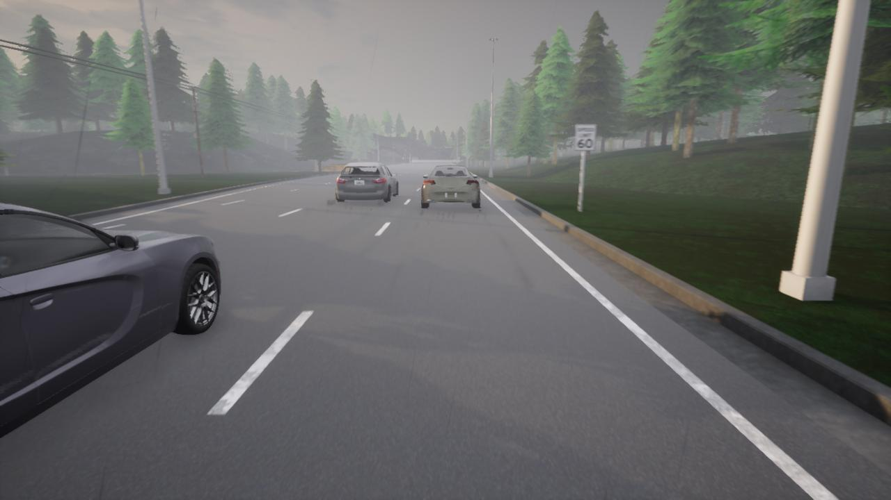
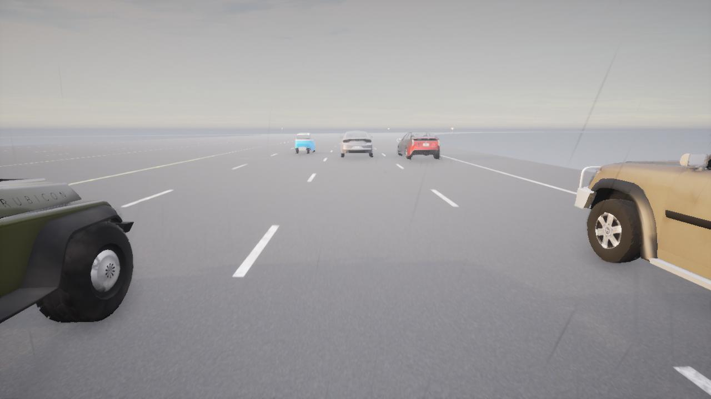
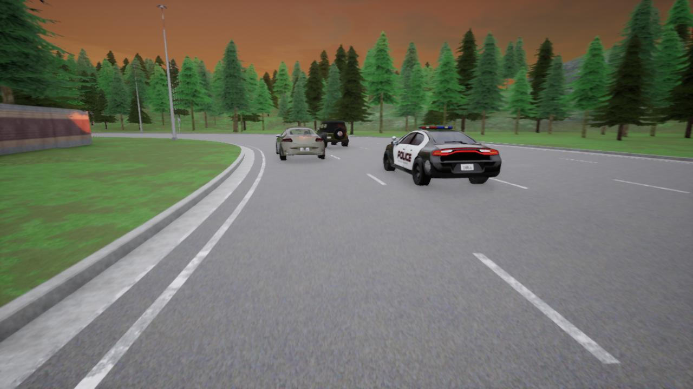

DATASET INSPECTION · SIMULATED DRIVING
TuLane simulation samples
Three publisher-selected examples from CARLANE’s TuLane source domain, downloaded unchanged at 1280 × 720. These are CARLA simulation scenes. They are for inspection only and have not been added to the review queue or training.
Tap a photo to open it at its original size. These demonstration images are not a random sample of the full dataset.


